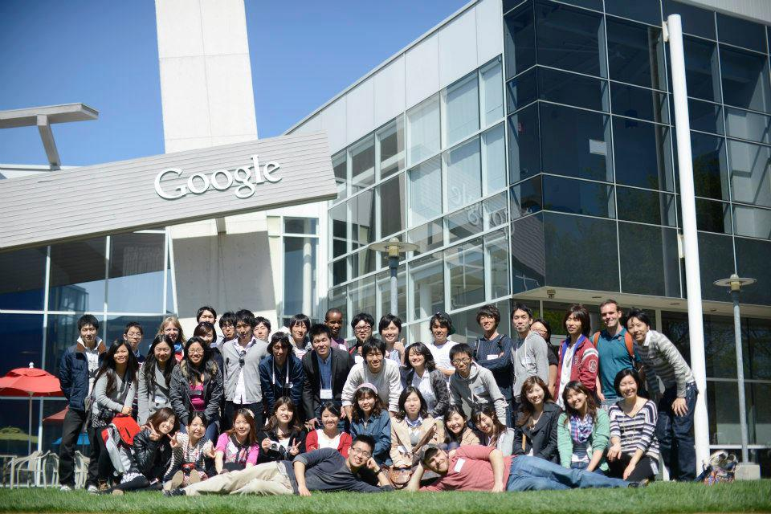
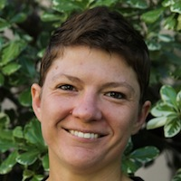

Week 2
| Day 5: Sunday, August 11 | |||
|---|---|---|---|
| 9:30AM | Needfinding Presentations: Come share and hear from the other groups in regards to what they discovered in their needfinding interviews. This is a great chance to learn about some of the other projects. | ||
| 12:30PM |  Google Tour with Mike Lin and Grace Chang |
||
| 4:30PM | Field Day! Throw around a football or baseball. Shoot some hoops on the Stanford courts. Go outside and run around! | ||
| 7:00PM | Introduction to Social Entrepreneurship in Asia: Ken Ito | ||
| 8:30PM | Spotlight Activity! Spend some time talking about you, who you are as a person today, and what you've done to get where you are. | ||
| Day 6: Monday, August 12 | |||
|---|---|---|---|
| Free day! | |||
| Day 7: Tuesday, August 13 | |||
|---|---|---|---|
| 9:00AM | Poverty Simulation: Understand the challenges faced by people who have to consistently try to make ends meet. You'll be assigned specific familial roles and have to live your 'lives'. The point of this simulation is to show how difficult, frustrating and exhausing life can be when you simply don't have enough resources. | ||
| 3:00PM | Second Harvest Food Bank: Since its inception in 1974, Second Harvest has become one of the largest food banks in the nation, providing food to an average of nearly one quarter of a million people each month. The Food Bank mobilizes individuals, companies, and community partners to connect people to the nutritious food they need. |
||
| 7:00PM | Intro to Social Entrepreneurship - Professor Litvak: For three decades Larry Litvak has been a leader in the management, financing and governing of organizations pursuing social change. Larry has been a decision maker in the granting of approximately $100 million to social sector organizations. Larry has a bachelor's degree from Stanford in Economics and a master's degree from the Harvard Kennedy School. |
||
| Day 8: Tuesday, August 14 | |||
|---|---|---|---|
| 10:00AM | BAYCAT Visit: BAYCAT offers free classes in media and design. Through project-based learning and access to the latest digital technology, students are able to learn professional media applications while discovering their innate artistic abilities. |
||
| 11:30AM | Delancey St. Tour: Delancey Street is the country's leading residential self-help organization for former substance abusers, ex-convicts, homeless and others who have hit bottom. The average resident has been a hard-core drug and alcohol abuser, has been in prison, is unskilled, functionally illiterate, and has a personal history of violence and generations of poverty. |
||
| 2:30PM | True Colors - Discovering your Leadership Style:
Four-color leadership test, created by Dr. Taylor Hartman, divides personalities into four colors: Gold, Blue, Green, and Orange. Four colors represent four personalities and leadership styles. This method is widely used by companies all over the world in order to create an ideal and productive working environment for its employees. If you know which color personality you are, you may better understand your professional role, your role in a team, how you react to certain situations and what you can do to improve your situation.About the Speaker:Sunshine Workman works with Cal Corps Public Service Center, which fosters life-long commitments to public service at University of California, Berkeley. She is working on three leadership programs, which promote intercultural understanding and justice within and outside campus. She specializes in intercultural communications, leadership trainings and workshops. |
||
| 4:30PM | Silicon Valley Presentation: Tim Clark A general overview and introduction to the Silicon Valley area. | ||
| Day 9: Thursday, August 15 | |||
|---|---|---|---|
| 1:00PM | Ideation Workshop at d.school
The d.school is a hub for innovators at Stanford. Students and faculty in engineering, medicine, business, law, the humanities, sciences, and education find their way here to take on the world’s messy problems together. Human values are at the heart of our collaborative approach. We focus on creating spectacularly transformative learning experiences. Along the way, our students develop a process for producing creative solutions to even the most complex challenges they tackle. This is the core of what we do.
 Gayle Curtis, Gayle Curtis Associates Gayle Curtis is a user interface architect and design strategist for online ventures and interactive products. Recently he was Principal Interaction Designer at Yahoo! and he has led the interaction design and user experience architecture for several startup ventures. At Stanford he has taught courses in product and HCI design. At Yahoo! he developed a practice area in strategic ideation and disseminated it through workshops in the US and Asia. |
||
| Day 9: Friday, August 16 | |||
|---|---|---|---|
| 1:00PM | Prototyping Workshop at d.school After the ideation phase, you have a mountain of ideas, some of which you'd like to pursue. Prototyping allows you to fully explore all of those concepts you want to evaluate. You prototype because you need to explore your options -- to try things and fail, further informing your design process. Prototyping is a way to do your due diligence on the concepts that came out of ideation. Get your hands dirty! Click that mouse! Bias toward action! If a picture is worth a thousand words, a prototype is worth a thousand pictures. |
||
| 7:30PM | Jeopardy! (tentative) | ||
| Day 11: Saturday, August 17 | |||
|---|---|---|---|
| 9:30AM | Marshmallow Challenge & Teambuilding | ||
| 10:30AM | Design4America: Design for America(DFA) is an award-winning nationwide network of interdisciplinary student teams and community members using design to create local and social impact. Design for America teaches human centered design to young adults and collaborating community partners through extra-curricular, university based, student led design studios to look locally, create fervently and act fearlessly. DFA currently tackles national challenges in Education, Health, Economy and Environment Speakers: |
||
| 7:30PM | Crossing the Line Activity: Do a bit of soul-searching with this classic Stanford dorm activity. Get a chance to really connect and learn things about your fellow participants. | ||
 Gwen has more than 20 years of field experience working in international development - specifically in the areas of program design and implementation, organizational capacity building, gender analysis, and program monitoring and evaluation. The focus of Gwen’s professional work encompasses three key areas: 1) designing and conducting evaluations of development programs and social change projects, 2) building institutional capacity in evaluation and program design and planning, and 3) providing technical expertise, guidance, and training in the design, implementation, and evaluation of social change initiatives, including evaluation plans and project-specific evaluation frameworks and methodologies.
Gwen has more than 20 years of field experience working in international development - specifically in the areas of program design and implementation, organizational capacity building, gender analysis, and program monitoring and evaluation. The focus of Gwen’s professional work encompasses three key areas: 1) designing and conducting evaluations of development programs and social change projects, 2) building institutional capacity in evaluation and program design and planning, and 3) providing technical expertise, guidance, and training in the design, implementation, and evaluation of social change initiatives, including evaluation plans and project-specific evaluation frameworks and methodologies.